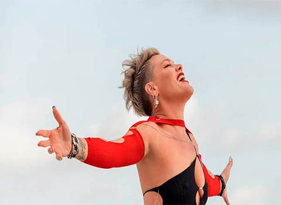
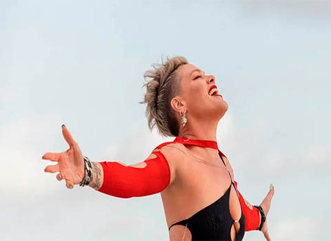

Missundaztood

Datos del disco
- Fecha de Publicación: 20 de noviembre de 2001
- Género: Pop-rock
- Duración: 55:20 min
- Discográfica: LaFace, Arista, BMG
Canciones
- Missundaztood
- Don't Let Me Get Me
- Just Like a Pill
- Get the Party Started
- Respect
- 18 Wheeler
Es el segundo álbum de estudio de la cantante de pop-rock Pink. El álbum fue lanzado en noveimbre de 2001, se convirtió en uno de los mas vendidos en 2002 y logró el reconocimiento internacional de la artista ganando elogios por parte de la crítica, siendo nominada en dos categorías a los Premios Grammy.
El álbum Missundaztood aborda diferentes temas en sus canciones. «Don't Let Me Get Me» aborda la angustia adolescente, «Just Like a Pill» describe su abuso de drogas en su adolescencia, en «My Vietnam» utiliza las historias de su padre que fue enviado a combatir a la Guerra de Vietnam y en "Family Portrait" habla de cómo le afectó el divorcio de sus padres cuando era una niña.
Funhouse

Datos del disco
- Fecha de Publicación: 28 de octubre de 2008
- Género: Pop-rock
- Duración: 47:02 min
- Discográfica: LaFace Zomba,Sony BMG.
Canciones
- So What
- Sober
- I Don't Believe You
- One Foot Wrong
- Please Don't Leave Me
- Bad Influence
Es el quinto álbum de estudio de la cantante y acróbata estadounidense Pink, publicado el 28 de octubre de 2008. En su lanzamiento el álbum alcanzó el primer puesto en las listas de seis países, entre ellos Australia, Nueva Zelanda, Países Bajos y Reino Unido, y en el número dos en Alemania, Irlanda y Estados Unidos.
El álbum se ubicó en la posición 13 de los álbumes con más ventas a nivel mundial del año 2008, logrando más de 2,5 millones de copias y en el número 17 en 2009. Hasta la fecha ha logrado vender más de 7 millones de copias a nivel mundial.
Beautiful trauma
Datos del disco
- Fecha de Publicación: 13 de octubre de 2017
- Género: Pop-rock
- Duración: 51:08 min
- Discográfica: RCA Records.
Canciones
- Beautiful Trauma
- Revenge
- Whatever You Want
- What About Us
- But We Lost It
- Barbies
En español: Hermoso trauma, es el séptimo álbum de estudio de la cantante estadounidense P!nk. Fue lanzado a la venta el 13 de octubre de 2017, por RCA Records.El álbum tuvo un buen recibimiento comercial en las diferentes listas de popularidad del mundo, al entrar en el puesto número uno en doce países, como Australia, Reino Unido y Canadá.
El 21 de noviembre, «Beautiful trauma» se convirtió en el segundo sencillo del álbum. El mismo fue escrito por Pink junto a Jack Antonoff y fue producido por este último. Ese mismo día se lanzó el video musical, el cual contó con el actor Channing Tatum como protagonista.El sencillo recibió disco de platino en Australia por la venta de 70 mil copias, disco de oro en Canadá y disco de plata el Reino Unido
Trustfall
Datos del disco
- Fecha de Publicación: 17 de febrero de 2023
- Género: Pop-rock
- Duración: 43:57 min
- Discográfica: RCA Records
Canciones
- When I Get There
- Trustfall
- Turbulence
- Long Way to Go
- Kids in Love
- Never Gonna Not Dance Again
Es el noveno álbum de estudio de la cantante estadounidense Pink. Fue publicado el 17 de febrero de 2023 a través de RCA Records
Principalmente un álbum dance-pop, Trustfall incorpora elementos de una amplia variedad de subgéneros, en concreto pop rock,4Americana, música country, y folk. Algunas pistas también contenían batería militar y la interpretación de solos de piano y guitarra. Líricamente, Trustfall contiene temas de automotivación, autoaceptación, vida después de la muerte,la pérdida y el amor. En una entrevista con Billboard, Pink explicó el significado del álbum y el proceso de grabación:
La secuencia de este álbum era muy importante para mí, por si alguien lo escucha de principio a fin. Porque la vida es así para mí, es una montaña rusa emocional y es un viaje, y este álbum es eso. Pero eso no es la vida. La vida es desordenada y hermosa y desordenada otra vez. Han sido tres años de trabajo. «Lost Cause» y «Never Gonna Not Dance Again» fueron las dos primeras canciones del álbum. Y «Never Gonna Not Dance Again» fue mi reacción a la fatiga suprarrenal, el cortisol, el estrés. Era como: «Si el mundo se acaba y nos salimos de nuestro eje, voy a coger mis patines. ¡Vamos a tomar una clase de cócteles en línea! ¿Qué estamos haciendo?" Así que esas canciones del disco fueron una reacción a: «No puedo preocuparme todo el tiempo. También necesito sentir alegría.
Galería de fotos
 
